class: center, middle, inverse ## Learning, Optimization, and the Benefits of Noise ### Jacob Abernethy - Georgia Tech CS (formerly UMich) #### September 7, 2017 \[ \def\DD{\mathbf{D}} \def\EE{\mathop{\mathbb{E}}} \def\argmin{\mathop{\arg\min}} \def\argmax{\mathop{\arg\max}} \def\K{\mathcal{K}} \] --- ## Outline ### $\quad \sim \quad$ Introduction ### $\quad \sim \quad$ Randomization Methods for Learning ### $\quad \sim \quad$ Duality of Optimization and Sampling ### $\quad \sim \quad$ Extras --- class: center, middle # $\sim \sim \quad \quad $ Act 1 $\quad \quad \sim \sim$ - - - ## Perturbation Methods for Learning, Games, and Finance --- class: top ## Warmup with a Toy Problem: Expert Advice Imagine we have a set of alternatives to choose from on a repeated basis. Classically these alternatives were called as "**experts**". -- On each round $t=1,2,\ldots,T$, the **learner** must: * Randomly choose an expert $I\_t \in [N]$ from some distribution $p\_t$ * Observe a vector of "**gains**" $g_t \in [0,1]^{[N]}$ for all experts * Think of gain $g_t(i)$ is the reward for having chosen expert $i$ * Update the cumulative gain vector $G \leftarrow G + g\_t$. * Update the distribution $p\_{t+1}$ based on new $G$ -- Want *low regret*, where $ \text{Regret}\_T := \max\_{i \in [N]} \sum\_{t=1}^T \left( g\_t(i) - g\_t(I\_t) \right) $ **Question:** How do we set our "belief" $p_t$ based on historical performance? --- class:top ## Four Different Experts Algorithms **Algorithm 1** *(Exponential Weights)*: Sample $I_t$ from distribution $p_t$, where $ p_t(i) = \frac{\exp(G_i)}{\sum_j \exp(G_j)}$. -- **Algorithm 2** *(Mirror Descent)*: Sample $I_t$ from distribution $p_t$, where $p_t = \nabla \Phi(G)$ for potential $\Phi$ (e.g.: $\Phi(G) = \log \sum_i \exp(G_i))$ -- **Algorithm 3** *(MaxEntropy)*: Sample $I_t$ from dist. $p_t$, where $\quad \quad p_{t} = \argmax_p \; p^T G - H(p)$ That is, you choose a distribution to maximize the tradeoff between expected gain $p^\top G$ and "regularity" of $p$ (e.g. $H(p) = \sum_{i} p_i \log p_i$). -- **Algorithm 4** *(Gumbel Perturbation)*: Sample $I_t = \arg\max_i G_i + Z_i$ where $Z_i$ is *Gumbel* noise. (Gumbel has CDF $F(x) = e^{-e^{-x}}$.) --- class:top ## Four <strike>Different</strike> Same Experts Algorithms **Algorithm 1** *(Exponential Weights)*: Sample $I_t$ from distribution $p_t$, where $ p_t(i) = \frac{\exp(G_i)}{\sum_j \exp(G_j)}$. **Algorithm 2** *(Mirror Descent)*: Sample $I_t$ from distribution $p_t$, where $p_t = \nabla \Phi(G)$ for potential $\Phi$ (e.g.: $\Phi(G) = \log \sum_i \exp(G_i))$ **Algorithm 3** *(MaxEntropy)*: Sample $I_t$ from dist. $p_t$, where $\quad \quad p_{t} = \argmax_p \; p^T G - H(p)$ That is, you choose a distribution to maximize the tradeoff between expected gain $p^\top G$ and "regularity" of $p$ (e.g. $H(p) = \sum_{i} p_i \log p_i$). **Algorithm 4** *(Gumbel Perturbation)*: Sample $I_t = \arg\max_i G_i + Z_i$ where $Z_i$ is *Gumbel* noise. (Gumbel has CDF $F(x) = e^{-e^{-x}}$.) --- # Let's Look at Two of These - **Penalty Regularization**: Sample $I_t$ from dist. $p_t$, where $$p_{t} = \argmax_p \; p^T G - H(p) \quad \text{ where } H(p) = \sum_i p_i \log p_i$$ - **Noisy Perturbation** *(Gumbel Perturbation)*: Sample $$I_t = \arg\max_i \{ G_i + Z_i \} \quad \text{ where } Z_i \sim \text{Gumble}$$ --- name: choicetheory class: top ## Classic Problem in Choice Theory * Humans have well-defined utilities for various alternatives * Vanilla choice theory: users should select highest-utility option * They (often) don't do that. Why? --- template: choicetheory <center> <img src="foodquality.gif" width="45%"> </center> --- template: choicetheory <center> <img src="foodquality_noisy.gif" width="45%"> </center> * One view: humans choose *after noise is added* to utilities * Known as *Random Choice Models* .paper[Luce 1959, McFadden 1974] * E.g. Gumbel noise leads to *Logit Choice* .paper[Guadagni and Little 1983] --- class: top ### One Economic Theory Suggests That... * The volatility of agent choice is due to bounded rationality. * In other words, humans are just unable to compute argmax well! -- * Maybe the story is more interesting... -- ### Utility Perturbation May Be Entirely Rational Why does it appear that humans are perturbing their utilities? Simple explanation: **exogenous factors** ("I'm already in PizzaHouse") But more interesting factors as well: -- * **Variety**: I don't want to eat the same thing every day! * **Hedging**: Maybe my assessments (or Yelp) aren't quite right? * **Exploration**: I should really try things I might not like. --- class: top ## Algorithmic Hedging via Regularization The standard view of learning is that we have a class of hypotheses $\mathcal{H}$ and we must select one hypothesis given a dataset $\mathbf{D}_n$ of $n$ eamples. -- The classical approach to Statstical Decision Theory problems is to solve a *regularized optimization problem*: <div>$$f_n = \mathop{\arg\min}_{f \in \mathcal{H}} \; \text{Loss}(f; \mathbf{D}_n) + \lambda R(f)$$</div> where $R(\cdot)$ is a (typically convex) *regularizer*, and $\lambda$ is a parameter to manage the bias-variance tradeoff. **Intuition**: $R(\cdot)$ helps you hedge. Yes, you want to fit your data, but don't let your parameters go crazy! --- class: top ## Some Issues with This Basic Strategy <div>$$f_n = \mathop{\arg\min}_{f \in \mathcal{H}} \; \text{Loss}(f; \mathbf{D}_n) + \lambda R(f)$$</div> This approach has downsides... -- 1. **Construction**: How do I choose $R(\cdot)$ appropriately? -- 1. **Computational**: The ideal choice of $R(\cdot)$ may be expensive to work with. -- 1. **Determinisim**: The method is inherently deterministic. Thus... -- * Does not give rise to *exploration* * It's not robust to *adversarial inputs* * It can bring about *privacy* issues. That is, $f_n$ may expose sensitive information about input data $\mathbf{D}_n$. --- class: top ## Alternative: **Perturb** the Input Data! Instead of solving a complex regularized optimization problem, why not just generate some noisy input data? <div>$$\hat{f}_n = \mathop{\arg\min}_{f \in \mathcal{H}} \; \text{Loss}(f; \mathbf{D}_n \cup \mathbf{\hat{D}})$$</div> where $\mathbf{\hat{D}}$ is "noise" -- random data we generated on our own. -- Note that the output $\hat{f}_n$ is indeed random. To reduce variance, it is often better to instead use <div>$$\bar{f}_n := \EE_{\mathbf{\hat{D}}} \left[ \mathop{\arg\min}_{f \in \mathcal{H}} \; \text{Loss}(f; \mathbf{D}_n \cup \mathbf{\hat{D}}) \right]$$</div> And this can be estimated using Monte Carlo sampling. --- class: top ## Perturbation $\equiv$ Regularization Under certain circumstances, data perturbation is **equivalent** to penalty regularization! -- **Theorem:** (.paper[A., Lee, Tewari, 2013]) When the hypothesis space $\mathcal{H}$ is convex and the Loss is linear, then for any distribution $\mathcal{P}$ on $\hat\DD$, there exists a convex regularization function $R(\cdot)$ such that <div>$$ \EE_{\mathbf{\hat{D}}} \left[ \argmin_{f \in \mathcal{H}} \; \text{Loss}(f; \mathbf{D}_n \cup \mathbf{\hat{D}}) \right] = \argmin_{f \in \mathcal{H}} \; \text{Loss}(f; \mathbf{D}_n) + \lambda R(f) $$</div> The implication can not be reversed in general, unfortunately! Earliest "online learning" result of .paper[Hannan 1957] implemented a (uniform) perturbation strategy. Extended by .paper[Kalai, Vempala 2005] --- class: top ## Perturbation Methods in Solving Games * There's been recent progress in Go using Deep Learning methods <center> 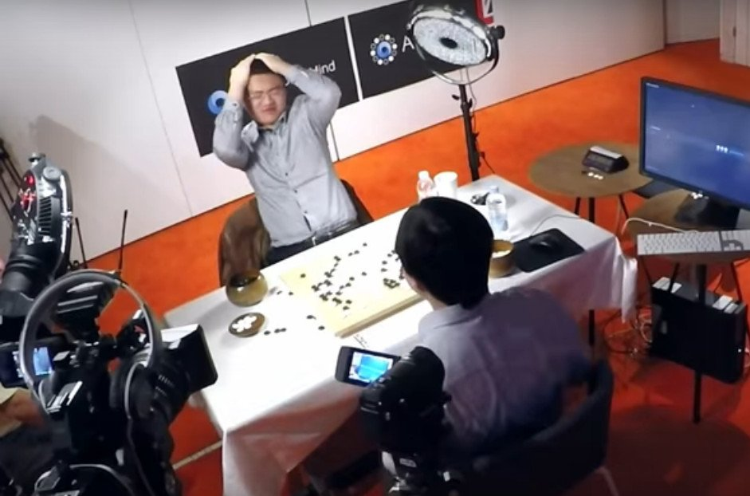 </center> -- * Original technique was to use "randomized playout simulation". In short, you "finish the game randomly" to estimate advantage <center> 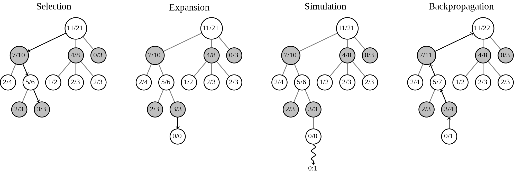 </center> * Monte Carlo random playouts (MCTS) is a data perturbation method, quite commonly used for solving a range of games --- class:middle ## A Broad View of Perturbation as a Regularization * .paper[A., Warmuth, Yellin, 2008]: The minimax optimal algorithm in the experts setting is a based on a simple random walk (playout) * .paper[A., Warmuth, 2010]: The same tool applies to a broad class of repeated decision problems * .paper[McMahan, A., 2013]: Applies also to repeated gambling scenarios * .paper[A., Lee, Tewari, 2014]: In a full-information context, *Gaussian* perturbations provide near-optimal guarantees in many settings * .paper[A., Lee, Tewari, 2015]: In a "bandit setting", where we receive limited feedback, a near-optimal algorithm as achieved as long as the perturbation has a *bounded hazard rate* --- class:top ## A Perturbation View of Option Pricing .left-column70[ * .paper[Black, Scholes 1973] showed that price of options and other "derivatives" can be determined via "hedging strategies". Requires stock price fluctuates according to a *geometric Brownian motion* (GBM)! * .paper[DeMarzo, Kremer, Mansour, 2006] developed worst-case methods for hedging options using regret-minimization techniques. * .paper[A., Frongillo, Wibisono 2012] showed that under a minimax perspective the worst-case strategy for Nature is GBM. * .paper[A., Bartlett, Frongillo, Wibisono 2013] showed that OPT strategy is **exactly** Black&Scholes delta-hedging. ] .right-column30[ 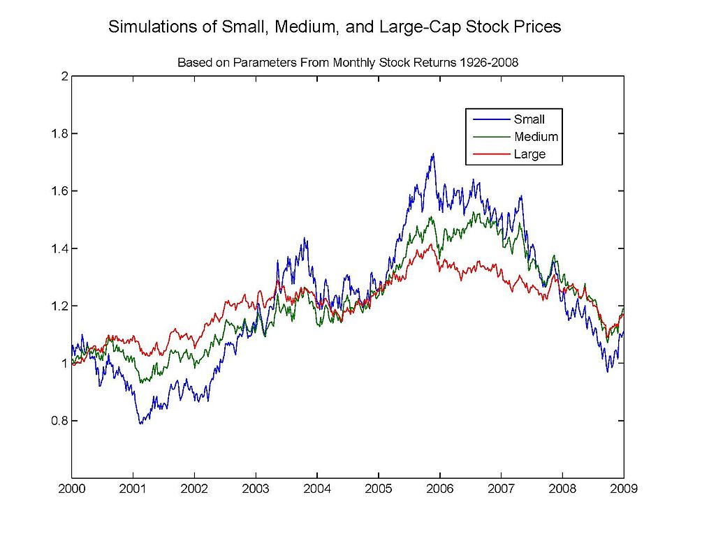 ] --- class: top ## Brief Overview of Black&Scholes Option Pricing * An asset $A$ (stock, bond, etc.) has a price process $S(t)$. * An option on $A$ has **expiration** $T$ and **strike price** $k$. These determine the **payout** function $\rho(S; k, T)$. For a "European call", <div>$$ \rho(S; k, T) = \max(0, S(T) - k). $$</div> * Black-Scholes assumes price $S(t)$ "wiggles" via *geometric Brownian motion* (GBM); i.e. $\log S(t) \sim \mathcal{N}(\mu_0 + t\mu, t\sigma^2)$. <center> 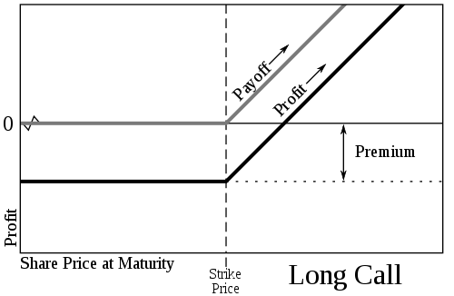 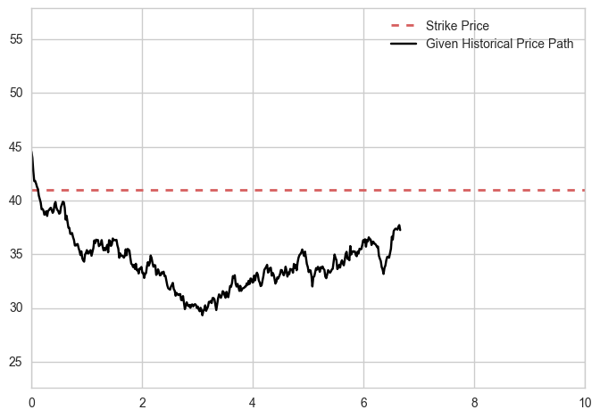 </center> --- class: top ## Option Pricing via Stochastic Calculus BS model assumes we can **hedge** option risk by trading underlying asset $A$. Gives a **value** for the option, the "fixed cost" of hedging. * Option value is func. $f(S, t)$; certainly $f(S,T) = \rho(S; k, T)$. * The Option owner holds portfolio $\Delta(S,t) := \frac{\partial f}{\partial S} dS$ * Using Ito's Lemma, and assuming we can hedge all risk: <div> $$df(S,t) = \frac{\partial f}{\partial t} dt + \frac12 \frac{\partial^2 f}{\partial S^2}S^2 dt + \frac{\partial f}{\partial S} dS = \frac{\partial f}{\partial S} dS$$ </div> * Gives rise to the Black-Scholes diff. eqn., and the solution <div> $$\frac{\partial f}{\partial t} dt + \frac12 \frac{\partial^2 f}{\partial S^2}S^2 dt = 0 \implies f(S,t) \equiv \EE_{S \sim \text{GBM}}[\rho(S(T); k,T)]$$ </div> * Final price $S(T)$ is chosen by "finishing" the GBM process. --- class: top ## An Alternative Perspective via Online Learning * Let's treat the option pricing problem as a repeated game between **Nature** and **Hedger** (a la .paper[DeMarzo, Kremer, Mansour 2006]) -- * Pick discretization level $n$. -- * **For** $i=1,2,\ldots, Tn$: * **Hedger** chooses $\delta_i \in \mathbb{R}$ * **Nature** chooses price update $S(i/n)$ (with constraints!) * **Hedger** gains (or loses) the amount $ \left(\frac{S(i/n)}{S((i-1)/n)} - 1 \right)\delta_i$ -- * The final **minimax regret** of the hedging game <div>$$ \inf_{\text{Algs } \; \mathcal{A}} \sup_{\text{Price paths } S} \;\; \rho(S(T)) - \sum_{i=1}^{Tn} \left(\frac{S(i/n)}{S((i-1)/n)} - 1 \right)\delta_i $$</div> * In other words, it's the worst-case difference between the option payout and the hedger's gains/losses --- class: top ## Minimax Option Pricing $\equiv$ Black-Scholes * .paper[A., Frongillo, Wibisono 2012]: Under appropriate constraints on Nature, this option pricing game gives rise to the same valuation! -- * That is, as discretization $n\to \infty$, <div>$$ \underbrace{\inf_{\mathcal{A}} \sup_{S} \;\; \rho(S(T)) - \sum_{i=1}^{Tn} \left(\frac{S(i/n)}{S((i-1)/n)} - 1 \right)\delta_i}_{\text{Minimax hedging regret}} \rightarrow \underbrace{\EE_{S \sim \text{GBM}}[\rho(S(T))]}_{\text{Black/Scholes value}} $$</div> -- * Achieved by showing that worst-case price process indeed converges to GBM! * Hence GBM is a consequence, not an assumption, of the model * .paper[A., Bartlett, Frongillo, Wibisono 2013]: the optimal player strategy for choosing $\delta_i$ converges to the Black-Scholes hedging strategy --- layout: true class: top ## Option Pricing is a Perturbation Method * A stock price has fluctuated over time * How should we hedge an option given strick price $k$, remaining time $T-t$, and current price $S(t)$? --- <center> </center> --- <center> 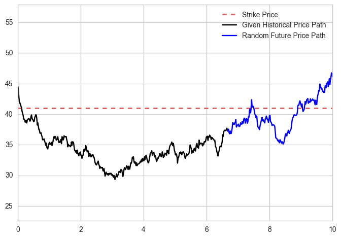 </center> * The minimax optimal hedging strategy says: sample the remaining price path (according to GBM) and buy a share of $A$ if the price falls above the strike price, and otherwise don't buy. --- layout:false class: center, middle # $\sim \sim \quad \quad $ Act 2 $\quad \quad \sim \sim$ - - - ## On the Duality of Annealing and Path Following --- class: top ## The Problem of Convex Optimization * Let $\K$ be a bounded convex set, and let $\theta$ be an input to our problem. We want to solve <div>$$ \min_{x \in \K} \theta^\top x $$</div> -- * This is, in some sense, the *most general* convex optimization possible. That is, we can always convert non-linear objective into a linear one. Let $f(\cdot)$ be any convex function, then <div>$$ \min_{x \in \K} \; f(x) \quad \rightarrow \quad \min_{\begin{align}(x,c) & \in \K \times \mathbb{R} \\ f(x) & \leq c \end{align} } \; c $$</div> -- * However, the fastest methods for optimization (e.g. Newton's method) work great when the function has guaranteed curvature. Quadratic functions, for example, are really easy to optimize! --- class: top ## Want Curvature? Add a Barrier Function! * Question: can we use 2nd-order methods with a linear objective? -- * Answer: add a barrier func. $\phi(\cdot)$ to "regularize" your objective: <div>$$ \min_{x \in \K}\; \theta^\top x + \lambda \phi(x) $$</div> -- 1. $\phi(\cdot)$ should act as a “barrier”, i.e. $\phi(\cdot) \to \infty$ towards bndry($\K$) 1. $\phi(\cdot)$ should be “super-smooth”, ... what does that mean? -- * .paper[Nesterov, Nemirovski]: We need $\phi(\cdot)$ to be a *self-concordant barrier function* (SCBF). That is, for all $x \in \text{int}(\K)$ and all $h$, <div> \begin{eqnarray*} \nabla^3\phi[h,h,h] & \leq & 2 (\nabla^2\phi[h,h])^{3/2}, \text{ and }\\ \nabla \phi[h] & \leq & \sqrt{\nu \nabla^2\phi[h,h]}, \end{eqnarray*} </div> * Parameter $\nu$ important, depends on $\phi(\cdot)$ and $\K$. (more later) --- class: top ## Linear Objective With/Without a Barrier .left-column[ * Linear Obj, no barrier <center>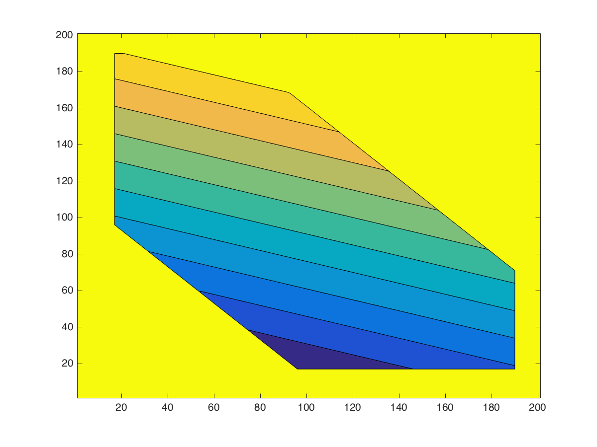</center> <div style="font-size:1.2em">$$\min_{x \in \K}\; \theta^\top x$$</div> ] .right-column[ * Obj w/ barrier function <center>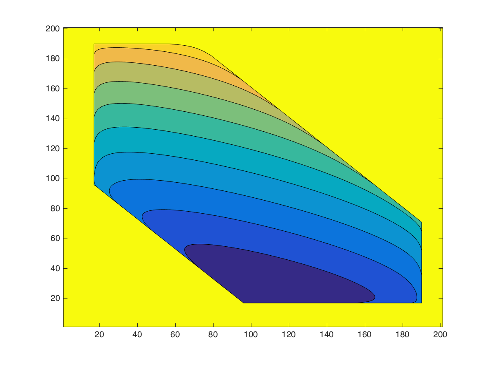 </center> <div style="font-size:1.2em">$$\min_{x \in \K}\; \theta^\top x + \lambda \phi(x)$$</div> ] --- class: top ## Basic Iterative Newton Update Scheme: $\text{Define } f\_\lambda(x) := \theta^\top x + \lambda \phi(x)$ <div>$ \begin{align*}\text{For } t & = 1, 2, \ldots: & \\ & G \leftarrow \nabla f_\lambda(x_{t-1}) & \quad (\textbf{Compute Gradient}) \\ & H \leftarrow \nabla^2 f_\lambda(x_{t-1}) & \quad (\textbf{Compute Hessian}) \\ & \tilde{x}_{t} \leftarrow x_{t-1} - \eta H^{-1} G & \quad (\textbf{Newton Step}) \\ & x_t \leftarrow \text{Proj}_K(\tilde{x}_{t}) & \quad (\textbf{Projection Step}) \end{align*} $</div> -- * **Facts:** If $\phi(\cdot)$ is a SCBF then -- 1. There is **no need** to do projections -- 2. When init point is "close", Newton convergence satisfies <div>$$ \text{# Iterations }\leq \log \log (1/ \epsilon) $$</div> --- class:top ## Path Following via Updating $\lambda$ **Recall:** we want to minimize $f_\lambda(x) = \theta^\top x + \lambda \phi(x)$, but for $\lambda = 0$. -- .left-column[ **Algorithm** (PathFollowing): **for** each iteration $k$ 1. Shrink $\lambda$ by the "right" amount, 2. Perform single Newton update: $x \leftarrow x - \nabla^{-2}f\_\lambda(x) \nabla f\_\lambda(x) $ ] -- .right-column[ <center> 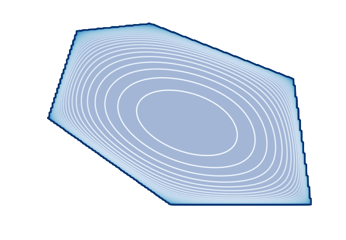 </center> ] -- <div> </div> <div> </div> * .paper[Nesterov, Nemirovski]: Ideal rate is $\lambda_k = \left( 1 - 1/\sqrt{\nu}\right)^k$ * Grants a convergence rate of $\text{# iter} = O(\sqrt{\nu}\log(1/\epsilon))$ --- class:top ## This is the **Central Path** Set of minimizers for various $\lambda$ is known as the **central path** -- <center> <img src="../../assets/images/animated_central_path.gif" width=45%> </center> <div>$$\text{CentralPath}(\lambda) := \argmin_{x \in \K} \theta^\top x + \lambda \phi(x)$$</div> .paper[Nesterov, Nemirovski]: Each Newton update is guaranteed to *keep close* to the central path. This is why we call the method **Path Following**. --- class: top ## A Randomized Alternative to Path Following ### Introduction to Simulated Annealing -- * Key idea: do "random walks" around input space <center><img src="../../assets/images/Hill_Climbing_with_Simulated_Annealing.gif"></center> * The random walk should have higher probability on higher objective values * Turn down the "temperature" to "anneal" the distribution towards the optimal point. --- class: top ## Intuition Behind Simulated Annealing Define a family of distributions on $\K$: <div>$$ P_t(x) = \frac {\exp(-f(x)/t)} {\int_\K \exp(-f(z)/t)\, dz} $$</div> The parameter $t > 0$ is called the **temperature**. Notice: * When $t$ is very large, sampling from $P_t(\cdot)$ is equivalent to sampling from the uniform distribution on $\K$, which isn't too bad. * When $t$ is very small, all mass of $P_t(\cdot)$ is concentrated around minimizer of $f(x)$. That’s what we want! * If we choose a sequence of "slowly decaying" temperatures $t\_1 > t\_2 > \ldots$, then $P\_{t\_{i}}$ is not far from $P\_{t\_{i+1}}$. I.e. we can “warm start” from previous samples. --- class:top ## Simulated Annealing in Action * We generate 25 points from the dist. $P\_t(x) = \frac {\exp(-f(x)/t)} {\int\_\K \exp(-f(z)/t)\, dz}$ * We slowly decrease the temperature $t$ so the distribution *anneals* towards the optimum <center> 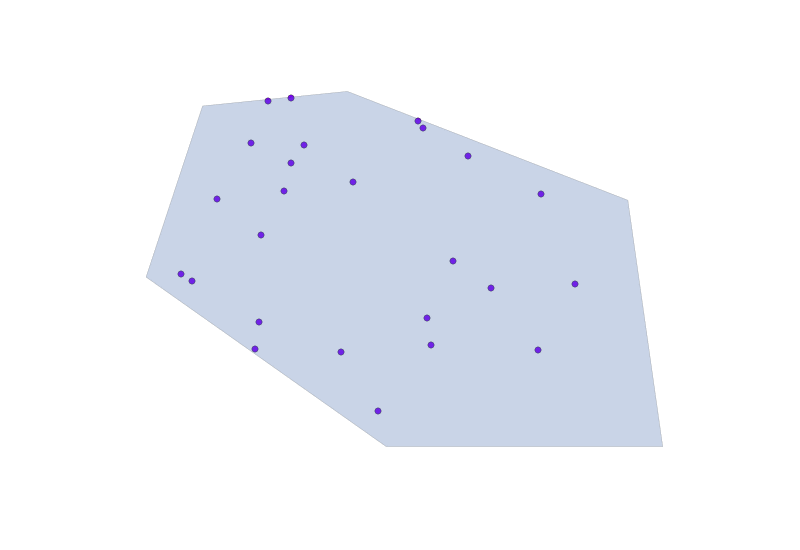 </center> --- class: top ## How to sample from $P_t(\cdot)$? Hit-and-Run! * .paper[Smith 1985]: The Hit-and-Run algorithm provides a generic tool for sampling from convex bodies. * .paper[Lovasz 1999], .paper[Lovasz, Vempala 2003], etc.: Hit-and-Run mixes quickly for general log-concave distributions. -- <center> 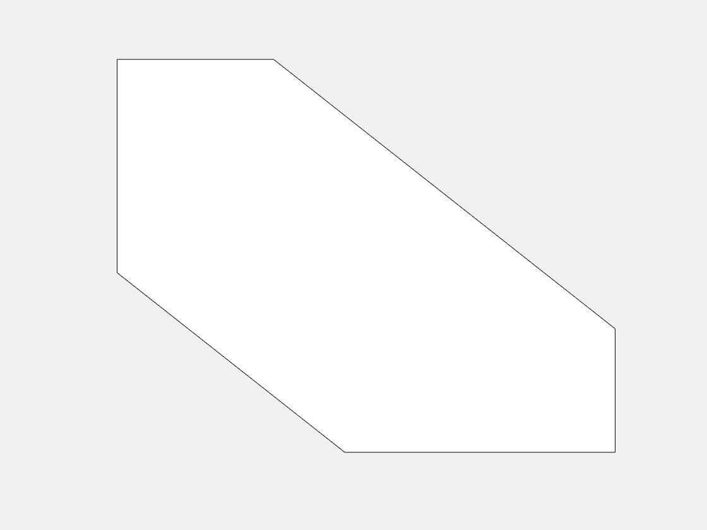 </center> * Hit-and-Run only needs a membership oracle! * Assuming a "warm-start", mixing time is generally $\tilde O(n^3)$ --- class: top ## Hit-and-Run is Super Simple .smallish[ ```python class HitAndRunConvexBody(object): def membership_oracle(self, x): return np.all(self.A.dot(x) > self.b) def random_sample(self, x, y, theta, epsi=0.0001): val0, val1 = [np.exp(pt.dot(theta)) for pt in [x, y]] alpha = (np.log(0.5) + np.log(val1 / val0 + 1)) / np.log(val1 / val0) midpoint = x + alpha * (y - x) if epsi >= 1.0: return midpoint else: xnew, ynew = (x, midpoint) if cointoss() else (midpoint, y) return self.random_sample(xnew, ynew, theta, epsi=2 * epsi) def find_bndry_pt(self, x, dirv, err_tol=0.0001): if err_tol > 1.0: return x midpoint = x + dirv / 2.0 startpt = midpoint if self.membership_oracle(midpoint) else x return self.find_bndry_pt(startpt, dirv / 2, err_tol=2 * err_tol) def hit_and_run(self, theta, numiter, initx=None, plot=False): x = self.x0 if (initx is None) else initx for itr in range(numiter): dirv = self.random_direction() bndry1, bndry2 = [self.find_bndry_pt(x, d) for d in [dirv, -dirv]] x = self.random_sample(bndry1, bndry2, theta) return x ``` ] --- class:top ## Convergence Rates of Simulated Annealing .paper[Kalai, Vempala 2006] proved convergence rate of $\tilde O(n^{4.5})$ oracle queries .left-column[ .smallish[ Analysis of .paper[Kalai, Vempala 2006] proved that needed conditions are 1. Successive distributions are "close to isotropic", **and** 1. Successive covariance ellipsoids must contain each other's means. 1. 1+2 are achieved with temp schedule $t_k := (1 - 1/\sqrt{n})^k$ ] ] -- .right-column[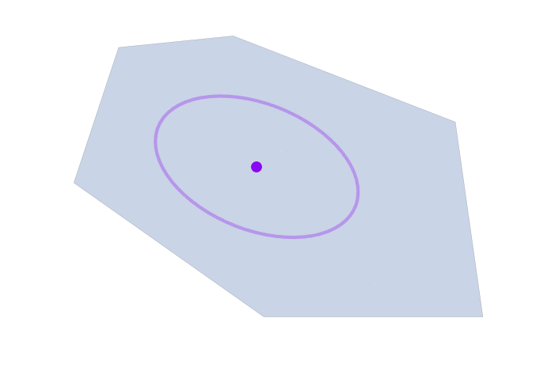] <div> </div> Let's define the **Heat Path** as the sequence of expectations over various temps $t$. That is, <div> $$\text{HeatPath}(t) := \EE_{X\sim P_t}[X]$$ </div> --- class:top ## Magical Equivalence of Annealing and PathFollowing .paper[A., Hazan 2016]: With a precise choice of SCBF $\phi(\cdot)$, Simulated Annealing becomes **equivalent**, analytically, to Path Following. -- .left-column[ <center> .smallish[ | Newton Path Following | Simulated Annealing | |-------------------------------------------------------|---------------------------------------------| | $\text{CentralPath}(\lambda)$ | $\text{HeatPath}(t)$ | | $\displaystyle \argmin\_{x \in \K} \theta^\top x + \lambda \phi(x)$ | Mean of $P_t$ | | Inv. Hess. $\nabla^{-2}\phi(x)$ | Cov. Mtx of $P_t$ | | Optimal Schedule $\lambda_k = (1 - 1/\sqrt{\nu})^k$ | Optimal Schedule $t_k = (1 - 1/\sqrt{n})^k$ | ] </center> ] .right-column[ <center> <img src="../../assets/images/animated_central_path.gif" width=90% style="padding:10px"> $\text{CentralPath} \equiv \text{HeatPath}$!! </center> ] <div> </div> This observation leads to a faster rate for annealing in terms of the barrier parameter $\nu$, and often $\nu << n$ --- ## What is this magical function? Special choice of $\phi(\cdot)$ is Fenchel conjugate of *log-partition function*! <div>$$ \phi(x) := \sup_{\theta} \left\{ \theta^\top x - \log \int_\K \exp(-\theta^\top x) \, dx \right\} $$</div> This is known as the "entropic barrier" (.paper[Bubeck, Eldan 2015]) * .paper[Nesterov, Nemirovski] showed that, when $\K$ is a cone one always has a *universal barrier* $\phi\_{\K}(x) = \log \text{Vol}(\K^*(x))$. * .paper[Guler 1996] showed that indeed one has a much more natural interpretation $\phi\_{\K}(x) = \log \int\_{\K^*} \exp(-\theta^\top x) \, dx$. * The entropic barrier is actually $\phi\_{\K^\*}^{\*}(\cdot)$, which is an SCBF following .paper[Nesterov, Nemirovski]. A more general proof was given by .paper[Bubeck, Eldan 2015], showing result for more than cones. --- class: center, middle # $\sim \sim \quad \quad$ Epilogue $\quad \quad \sim \sim$ - - - ## Some Extras --- class: top ## The Michigan Data Science Team (MDST) * Organized a student group for *Competitive Data Science* at UM * Prize-driven competitions, internal and external * Funded by NSF CAREER, Toyota, Google.org, SoarTech * Impressive accomplishments under two years 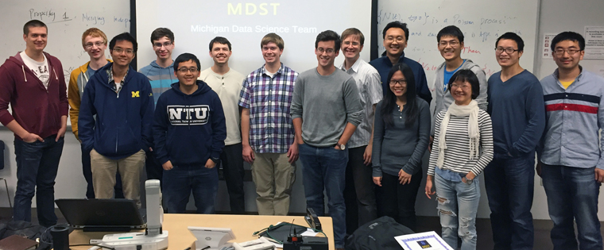 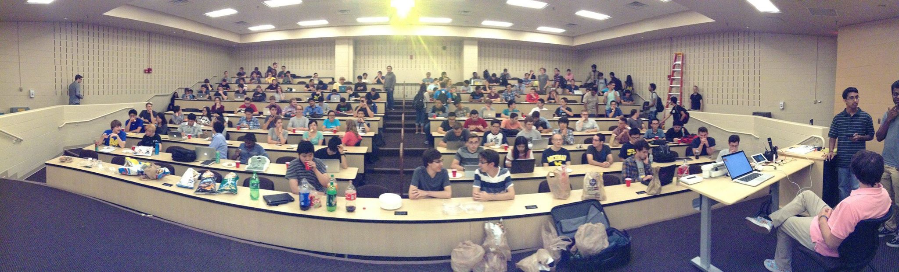 --- class:top # Google.org project: MyWater-Flint In collaboration with UM Flint group, built a citizen-focused app for managing water issues <center> <img src="app_water_distribution.png" width=28%> <img src="app_heatmap.png" width=28%> <img src="app_lead_levels.png" width=28%> </center> --- class:middle <center> <img src="flint_headlines.png" width=100%> </center> --- class: middle <center> <h1> $\sim \sim$ FIN $\sim \sim$ </h1> </center> .footnote[Slides made entirely with Markdown, Remark.js, MathJax, and animated GIFs]